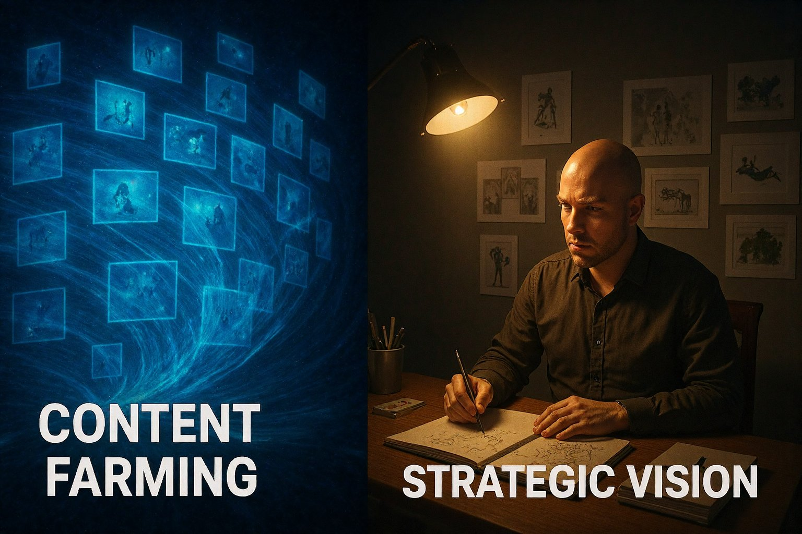

The Human Creative Advantage: Why AI-Generated Content Will Never Replace Strategic Artistic Vision
AI vs. Artist: A Creative Divide.

The Great Content Deluge: Quantity Without Quality
Walk through any creative platform today—DeviantArt, ArtStation, Instagram—and witness the unprecedented flood of AI-generated content. Millions of images materialize daily from prompts typed into Midjourney, ChatGPT, and many open source models. Yet despite this explosive output, something fundamental is missing: memorable impact.
The overwhelming majority of this content shares a troubling characteristic—it’s forgettable. Technically proficient, perhaps. Aesthetically pleasing, often. But devoid of the narrative architecture and emotional resonance that transforms visual assets into lasting entertainment franchises.
This represents the critical market inefficiency that separates commodity content generation from strategic creative empire building.
The Fundamental Distinction: Generation vs. Architecture
Current AI models excel at pattern recognition and synthesis. Feed them sufficient training data, craft precise prompts, and they’ll generate stunning visuals that would have required teams of artists just five years ago. But here’s what they cannot do: construct the deep narrative spine that transforms disconnected assets into transmedia intellectual property.
Consider the difference between generating a single character portrait and architecting an entire universe of interconnected personalities, each with embedded story potential spanning decades of content development. The former requires computational power. The latter demands what I call “experiential synthesis”—the ability to translate lived human experience into systematic creative frameworks.
This distinction becomes operationally critical when building scalable entertainment properties. A collection of beautiful AI-generated images remains exactly that—a collection. Without strategic narrative architecture, without emotional progression, without thematic coherence, these assets cannot support the sustained audience engagement required for franchise development.
The Competitive Moat of Human Creative Sovereignty
The most sophisticated creative professionals understand that AI represents amplification technology, not replacement technology. The value lies not in the generation capabilities, but in the systematic creative control that directs those capabilities toward coherent artistic vision.
Take the development of character consistency protocols. Current AI models struggle with maintaining visual coherence across multiple scenes, angles, and contexts. This technical limitation creates a massive operational opportunity for creators who develop proprietary methodologies for character consistency management. By implementing systematic approaches—advanced prompting techniques, custom model training, multi-stage enhancement processes—creative professionals can achieve 90%+ consistency rates while competitors struggle with 40-50% reliability.
But technical superiority represents only the foundation layer. The real competitive advantage emerges from strategic vision: the ability to envision how individual characters fit into larger narrative universes, how storylines interconnect across multiple media formats, how thematic elements resonate with target audiences across demographic segments.
This represents creative sovereignty—maintaining human directorial control while leveraging AI’s computational advantages.
Case Study: Strategic IP Development vs. Content Farming
Consider two approaches to AI-assisted creative production: Approach A: Content Farming
- Generate hundreds of standalone images
- Chase trending aesthetics and popular prompts
- Focus on algorithmic optimization for platform visibility
- Treat AI output as final product
Approach B: Strategic IP Architecture
- Develop systematic character creation protocols
- Build interconnected narrative universes with transmedia potential
- Implement quality control mechanisms for franchise-ready output
- Use AI as production tool within larger creative framework
The first approach generates temporary engagement but builds no lasting value. The second creates intellectual property assets with decades of monetization potential across comics, film, games, merchandise, and licensing opportunities.
The difference isn’t just strategic—it’s philosophical. Content farming treats creativity as commodity production. Strategic IP development treats creativity as empire construction.
The Experiential Advantage: Why AI Cannot Replicate Creative Vision
Here’s the fundamental limitation that ensures human creative sovereignty remains competitively decisive: AI models generate outputs based on training patterns, not authentic expressive intent.
When a human creator draws from 45 years of life experience—triumphs, failures, relationships, losses, discoveries—they access emotional and thematic depths that current AI simply cannot comprehend. This experiential foundation enables creators to make nuanced decisions about character motivation, narrative progression, and thematic resonance that emerge from genuine understanding rather than pattern matching.
Consider the development process for creating an original character with franchise potential. An AI model might generate visually appealing character designs based on prompts, but it cannot make strategic decisions about that character’s role within a larger narrative ecosystem. It cannot determine which personality traits will create compelling conflict dynamics across multiple storylines. It cannot envision how that character’s journey might resonate with audiences seeking specific emotional experiences.
These decisions require what I call “narrative intelligence”—the systematic ability to translate human experience into entertainment frameworks that sustain audience engagement across extended content consumption.
Market Positioning: Premium Value in a Commodity Landscape
As AI democratizes basic content creation, market dynamics shift dramatically. The value equation no longer centers on production capability—anyone with an internet connection can generate visually impressive content. Instead, premium value concentrates around strategic creative direction and systematic quality control.
This creates unprecedented opportunities for creators who position themselves correctly. While competitors chase algorithmic efficiency, sophisticated creators focus on building entertainment infrastructure that scales across multiple revenue streams.
The business implications are substantial. Entertainment franchises with strategic narrative architecture can generate revenue through:
- Publishing and distribution (comics, graphic novels, digital content)
- Film and streaming adaptation rights
- Gaming and interactive media licensing
- Merchandise and collectibles development
- Celebrity dataset creation and digital twin services
- Professional creative tool licensing
This diversified revenue model becomes possible only through systematic creative development that treats individual assets as components within larger intellectual property ecosystems.
Technical Mastery as Competitive Barrier
While creative vision provides strategic direction, technical mastery creates operational advantages that compound over time. Developing proprietary methodologies for AI-assisted production—advanced prompting techniques, custom model training, multi-stage enhancement protocols—establishes competitive barriers that protect market position.
Consider the development of celebrity dataset creation capabilities. This represents highly specialized technical knowledge that combines legal understanding (likeness rights, IP protection), technical implementation (custom LoRA training, facial consistency protocols), and creative application (character adaptation, style transfer techniques). Competitors cannot simply reverse-engineer these capabilities through casual observation.
These technical competencies become especially valuable as AI capabilities advance. Rather than threatening human creative roles, increased AI sophistication amplifies the value of systematic creative control. The more powerful the tools become, the more critical it becomes to have visionary direction guiding their application.
The Strategic Window: Establishing Dominance
Current market conditions create a narrow but decisive window for establishing dominance in AI-native entertainment development. While most creators remain focused on individual content pieces, sophisticated professionals can build integrated creative ecosystems that establish lasting competitive advantages.
The key insight: treat AI not as replacement technology, but as empire construction infrastructure. Use computational advantages to accelerate systematic creative development while maintaining human creative sovereignty over strategic direction.
This positioning becomes increasingly valuable as the market matures. As AI-generated content becomes commoditized background noise, audiences will gravitate toward curated experiences that offer genuine narrative depth and emotional resonance.
Execution Imperatives
For creative professionals seeking competitive differentiation in the AI era:
Develop Systematic Methodologies: Build repeatable processes for character consistency, narrative development, and quality control that can scale across multiple projects.
Focus on IP Architecture: Treat individual assets as components within larger intellectual property ecosystems designed for transmedia expansion.
Maintain Creative Sovereignty: Use AI as amplification technology while retaining human directorial control over strategic creative decisions.
Build Technical Competencies: Develop proprietary capabilities that create competitive barriers and operational advantages.
Think Franchise-Scale: Design creative properties with decades of content potential rather than focusing on individual pieces.
The future belongs to creators who understand that in an age of infinite content generation, finite human vision becomes the ultimate competitive advantage.